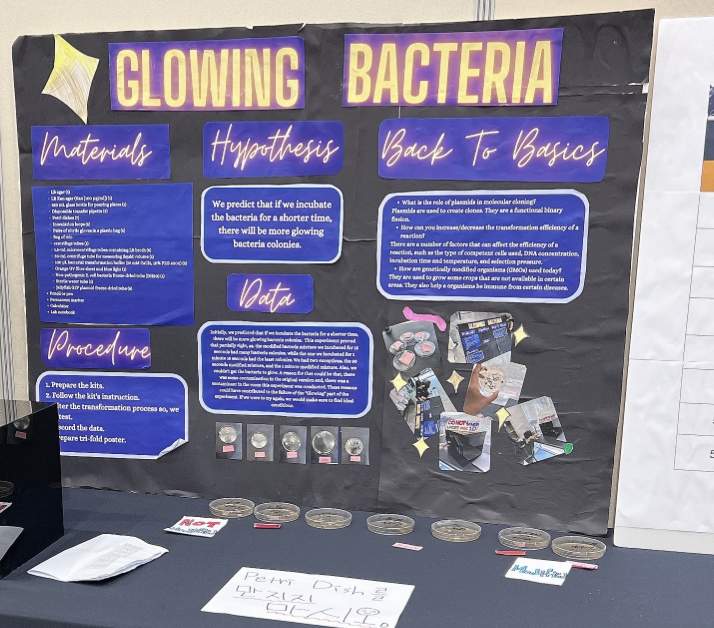

In 8th grade for my science project, I did a project about Glowing Bacteria. I did it with my classmate. This experiment was very educational and interesting. But at the end we didn't get the desired result. The main getaway from this experiment was that things in science always don't go a certain way. But, we can learn new things, like we learnt about how genes are modified and how there was a possibility that our experiment could have worked.